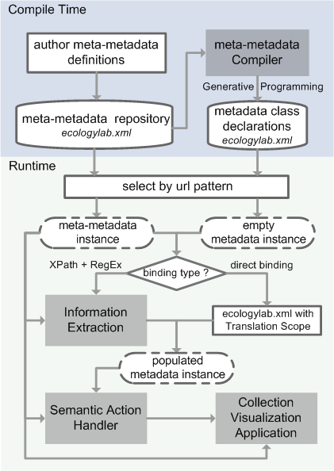

Meta? Meta? Data?
Metadata is defined as data about data...
so meta-metadata is data about metadata.
Suppose you had a library of music as a data set. The songs themselves would be considered data.
Things such as genre and artist would be considered metadata because they are information about the data.
Information that describes the metadata fields, what their datatypes are, and how to
extract values of these fields from, say, an Amazon page or an MTV page, these descriptions about metadata we define as
meta-metadata. Note that artist, itself, could be a multi-field object, including first name, last name, home town, biography, influences, and MySpace page.
In this sense we use the meta-metadata language to define data structures and specify retrieval methods for collecting
information off the web.
Meta-Metadata addresses 4 stages: data structure definition, information extraction, semantic actions, and presentation.
1. Metadata Definition
Meta-Metadata authoring begins with specifying the data structures that internally represent a particular type of metadata object. This structure consists of a set of meta-metadata fields which will hold the processed information. The structures are strongly typed, and may be nested, as per the needs of use. Structure re-use, as in object-oriented programming, is also possible, so that the artist description above could be used both for musicians and, say, also for actors.
2. Information Extraction
Information extraction describes how to populate instances of metadata from information sources. Thus, we can specify patterns, using XPath and regular expressions, for saying just how to extract the musician info from an MTV artist page.
3. Semantic Actions
Semantic actions are the tasks to perform with the now processed information. Using these actions you can perform "bridge functions," which connect to the collection representation applications, such as to gather and crawl links, and present information to the user. You can also specify control structures, as in a typical programming language.
4. Presentation
Presentation rules enable specifying CSS styles for particular fields, the order they are displayed in, whether some fields are hidden, and whether some serve as navigation links.
This image describes the lifecycle of meta-metadata and metadata.
